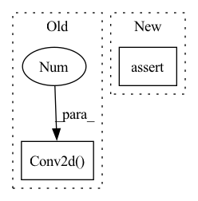

Pattern ID :26618

Before Change
def __init__(self, channels=128, init_type="kaiming_normal"):
super().__init__()
C = channels
self.conv1 = nn.Conv2d(1, C, kernel_size=(5, 5), padding=(2, 2))
self.conv2 = nn.Conv2d(C, C * 2, kernel_size=(5, 5), padding=(2, 2))
self.conv3 = nn.Conv2d(C * 2, C, kernel_size=(5, 5), padding=(2, 2))
self.conv4 = nn.Conv2d(C, 1, kernel_size=(5, 5), padding=(2, 2))
init_weights(self, init_type)
After Change
def __init__(self, channels=128, kernel_size=(5, 5), init_type="kaiming_normal"):
super().__init__()
C = channels
assert len(kernel_size) == 2
ks = np.asarray(list(kernel_size))
padding = (ks - 1) // 2
self.conv1 = nn.Conv2d(2, C, kernel_size=ks, padding=padding)
In pattern: SUPERPATTERN
Frequency: 3
Non-data size: 2
Instances
Fragment ID: 79678815
Project Name: r9y9/nnsvs
Commit Name: 3c02ef2cd06e725ba432e19b0f55b91567c164b2
Time: 2022-05-06
Author: zryuichi@gmail.com
File Name: nnsvs/postfilters.py
M Class Name: Conv2dPostFilter
N Class Name: Conv2dPostFilter
M Method Name: __init__(4)
N Method Name: __init__(3)
M Parent Class: BaseModel
N Parent Class: BaseModel
M File Name: nnsvs/postfilters.py
N File Name: nnsvs/postfilters.py
M Start Line: 12
M End Line: 16
N Start Line: 21
N End Line: 30
'>
Before Change
resnet_block(dim_out + dim_in, dim_out, time_emb_dim = time_dim),
resnet_block(dim_out + dim_in, dim_out, time_emb_dim = time_dim),
LinearAttention(dim_out),
Upsample(dim_out, dim_in) if not is_last else nn.Conv2d(dim_out, dim_in, 3, padding = 1)
]))
default_out_dim = input_channels
self.out_dim = default(out_dim, default_out_dim)
After Change
// downsample factors
downsample_factor = cast_tuple(downsample_factor, len(dim_mults))
assert len(downsample_factor) == len(dim_mults)
// layers
'>
Fragment ID: 79678819
Project Name: lucidrains/denoising-diffusion-pytorch
Commit Name: 54557120880bb9adbea9f93a29a2c432b67991c1
Time: 2023-02-01
Author: lucidrains@gmail.com
File Name: denoising_diffusion_pytorch/simple_diffusion.py
M Class Name: UViT
N Class Name: UViT
M Method Name: __init__(17)
N Method Name: __init__(17)
M Parent Class: nn.Module
N Parent Class: nn.Module
M File Name: denoising_diffusion_pytorch/simple_diffusion.py
N File Name: denoising_diffusion_pytorch/simple_diffusion.py
M Start Line: 295
M End Line: 383
N Start Line: 309
N End Line: 409
'>
Before Change
hdim = hidden_dim
self.encoder = nn.Sequential(
nn.Conv2d(3, hdim, 4, stride = 2, padding = 1),
nn.ReLU(),
nn.Conv2d(hdim, hdim, 4, stride = 2, padding = 1),
nn.ReLU(),
After Change
super().__init__()
hdim = hidden_dim
assert num_layers >= 1
encoder_layers = []
decoder_layers = []
'>
Fragment ID: 79678818
Project Name: lucidrains/dalle-pytorch
Commit Name: 95a980129346b66ce7cbb3f984b698ca21e0965c
Time: 2021-01-06
Author: nauman.mustafa.x@gmail.com
File Name: dalle_pytorch/dalle_pytorch.py
M Class Name: DiscreteVAE
N Class Name: DiscreteVAE
M Method Name: __init__(5)
N Method Name: __init__(4)
M Parent Class: nn.Module
N Parent Class: nn.Module
M File Name: dalle_pytorch/dalle_pytorch.py
N File Name: dalle_pytorch/dalle_pytorch.py
M Start Line: 82
M End Line: 102
N Start Line: 80
N End Line: 107